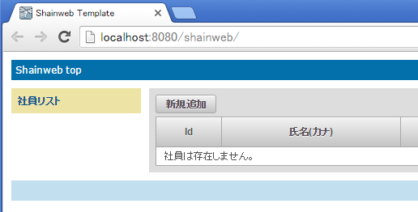
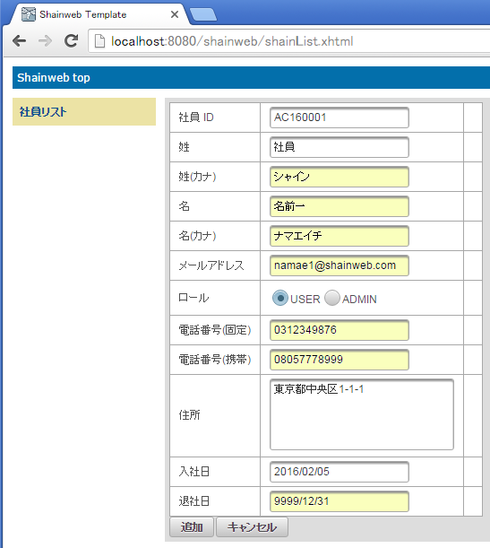
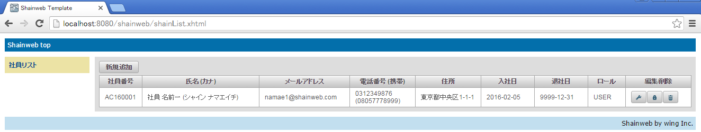
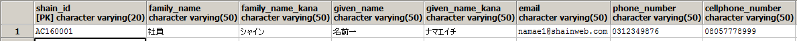
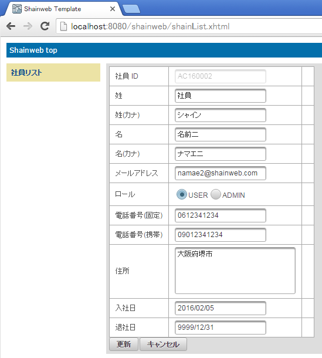
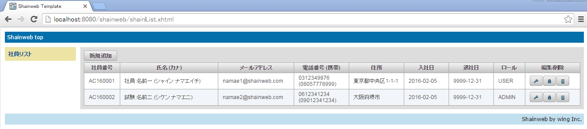
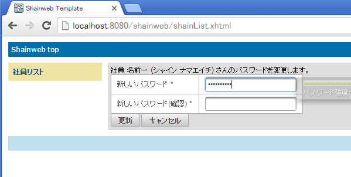
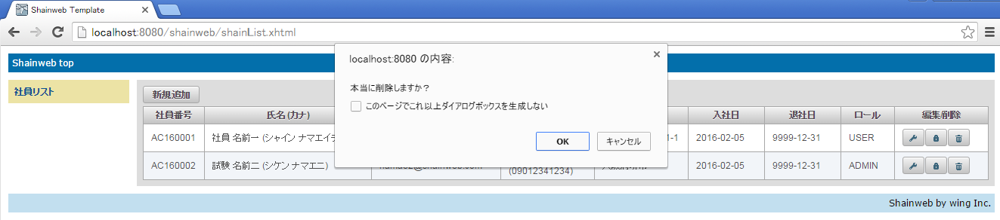
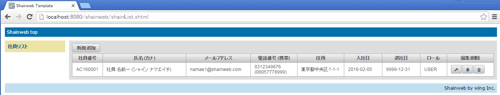
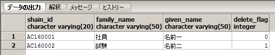

5. JPA, JSF を組み合わせたデータ操作¶
Java Persistence API を用いてデータ操作を行い、DB に対してデータを CRUD (Create, Read, Update, Delete) できるようにします。 データ項目は、画面から行います。
5.1. ソースコードの修正¶
まず、以下のソースコードを新規追加します。
- AbstractOperation.java
- EmployeeOperation.java
- RoleMasterOperation.java
- Resources.java
- SHA256Encoder.java
- AbstractController.java
- ShainData.java
- ShainPassword.java
- shainData.xhtml
- shainPassword.xhtml
さらに、以下のソースコードを修正します。
- shainList.xhtml
- ShainList.java
- Employee.java
- RoleMaster.java
5.1.1. 新規追加するソースコード¶
5.1.1.1. AbstractOperation.java の作成¶
com.javadera.shainweb.service パッケージ配下に AbstractOperation クラスを作成してください。作成後、ソースコードを以下のように修正してください。
package com.javadera.shainweb.service;
import javax.persistence.EntityManager;
import javax.persistence.PersistenceContext;
/**
* データ操作を行うための基底クラス
*
*/
public abstract class AbstractOperation {
@PersistenceContext(unitName="primary")
protected EntityManager em;
}
データの操作には、EntityManager インターフェイスを用いて行います。EntityManager はアプリケーションサーバから DI されるため、開発者が new するものではありません。 このコードでは、persistence.xml で定義された persistence-unit 名 (“primary”) の EntityManager を DI しています。
5.1.1.2. EmployeeOperation.java の作成¶
AbstractOperation クラスと同じパッケージに EmployeeOperation クラスを作成してください。作成後、ソースコードを以下のように修正してください。
package com.javadera.shainweb.service;
import java.util.Date;
import java.util.List;
import javax.ejb.Stateless;
import javax.persistence.Query;
import javax.persistence.criteria.CriteriaBuilder;
import javax.persistence.criteria.CriteriaQuery;
import javax.persistence.criteria.CriteriaUpdate;
import javax.persistence.criteria.Root;
import com.javadera.shainweb.model.Employee;
import com.javadera.shainweb.model.Employee_;
import com.javadera.shainweb.model.RoleMaster;
/**
* Employee テーブルの操作を行うクラス
*
*/
@Stateless
public class EmployeeOperation extends AbstractOperation {
/**
* Employee を挿入します。
* @param emp
*/
public void addEmployee(Employee emp) {
em.persist(emp);
}
/**
* Employee を削除します。
* @param emp
*/
public void removeEmployee(Employee emp) {
Employee target = em.merge(emp);
em.remove(target);
}
/**
* Employee を更新します。
* @param emp
* @return
*/
public Employee updateEmployee(Employee emp) {
Employee target = em.merge(emp);
em.flush();
return target;
}
/**
* ID を指定して Employee を取得します。
* @param id
* @return
*/
public Employee getEmployeeById(String shainId) {
Query q = em.createNamedQuery("Employee.findById");
q.setParameter("shainId", shainId);
return (Employee)q.getSingleResult();
}
/**
* ID を指定して Employee を取得します。
* (Criteria Query を用いた手法)
* @param id
* @return
*/
public Employee getEmployeeByIdCriteria(String shainId) {
CriteriaBuilder cb = em.getCriteriaBuilder();
CriteriaQuery<Employee> criteria = cb.createQuery(Employee.class);
Root<Employee> empRoot = criteria.from(Employee.class);
criteria.select(empRoot).where(cb.equal(empRoot.get(Employee_.shainId), shainId));
return em.createQuery(criteria).getSingleResult();
}
/**
* ID 順に Employee 一覧を取得します。
* @return
*/
@SuppressWarnings("unchecked")
public List<Employee> getEmployeeList() {
Query q = em.createNamedQuery("Employee.findAllOrderById");
return q.getResultList();
}
/**
* ID 順に Employee 一覧を取得します。
* (Criteria Query を用いた手法)
* @return
*/
public List<Employee> getEmployeeListCriteria() {
CriteriaBuilder cb = em.getCriteriaBuilder();
CriteriaQuery<Employee> criteria = cb.createQuery(Employee.class);
Root<Employee> emp = criteria.from(Employee.class);
criteria.select(emp).orderBy(cb.asc(emp.get(Employee_.shainId)));
return em.createQuery(criteria).getResultList();
}
/**
* パスワード以外の情報を更新します。
* @param shainId
* @param roleMaster
* @param familyName
* @param familyNameKana
* @param givenName
* @param givenNameKana
* @param email
* @param phoneNumber
* @param cellphoneNumber
* @param address
* @param joinDate
* @param quitDate
* @param deleteFlag
*/
public void updateEmployee(String shainId,
RoleMaster roleMaster,
String familyName,
String familyNameKana,
String givenName,
String givenNameKana,
String email,
String phoneNumber,
String cellphoneNumber,
String address,
Date joinDate,
Date quitDate,
Integer deleteFlag)
{
CriteriaBuilder cb = em.getCriteriaBuilder();
CriteriaUpdate<Employee> update = cb.createCriteriaUpdate(Employee.class);
Root<Employee> emp = update.from(Employee.class);
update.set(Employee_.roleMaster, roleMaster);
update.set(Employee_.familyName, familyName);
update.set(Employee_.familyNameKana, familyNameKana);
update.set(Employee_.givenName, givenName);
update.set(Employee_.givenNameKana, givenNameKana);
update.set(Employee_.email, email);
update.set(Employee_.phoneNumber, phoneNumber);
update.set(Employee_.cellphoneNumber, cellphoneNumber);
update.set(Employee_.address, address);
update.set(Employee_.joinDate, joinDate);
update.set(Employee_.quitDate, quitDate);
update.set(Employee_.deleteFlag, deleteFlag);
update.where(cb.equal(emp.get(Employee_.shainId), shainId));
em.createQuery(update).executeUpdate();
}
/**
* パスワードの更新
* @param shainId
* @param password
*/
public void updatePassword(String shainId, String password) {
CriteriaBuilder cb = em.getCriteriaBuilder();
CriteriaUpdate<Employee> update = cb.createCriteriaUpdate(Employee.class);
Root<Employee> emp = update.from(Employee.class);
update.set(Employee_.password, password);
update.where(cb.equal(emp.get(Employee_.shainId), shainId));
em.createQuery(update).executeUpdate();
}
}
このコードでは、DI された EntityManager を用いてデータベースへの CRUD 操作を行うメソッドを定義しています。 getEmployeeById、getEmployeeList メソッドでは、JPQL を用いたレコードの取得を行っています。
getEmployeeById メソッドではパラメータを文字列で指定して、セットする必要があります。もし文字列を書き間違えた場合、実行時までエラーは発見できません。 一方で getEmployeeByIdCriteria メソッドのように CriteriaQuery を用いると Employee_ クラスを用いて厳密にパラメータを指定でき、書き間違いはコンパイルエラーとなり間違いの発見を早めることができます。
5.1.1.3. RoleMasterOperation.java の作成¶
AbstractOperation クラスと同じパッケージに RoleMasterOperation クラスを作成してください。作成後、ソースコードを以下のように修正してください。
package com.javadera.shainweb.service;
import java.util.List;
import javax.ejb.Stateless;
import javax.persistence.Query;
import com.javadera.shainweb.model.RoleMaster;
@Stateless
public class RoleMasterOperation extends AbstractOperation {
private final String USER = "USER";
private final String ADMIN = "ADMIN";
/**
* RoleMaster を挿入します。
* @param roleMaster
*/
public void addRoleMaster(RoleMaster roleMaster) {
em.persist(roleMaster);
}
/**
* RoleMaster を削除します。
* @param roleMaster
*/
public void removeRoleMaster(RoleMaster roleMaster) {
RoleMaster target = em.merge(roleMaster);
em.remove(target);
}
/**
* RoleMaster を更新します。
* @param roleMaster
* @return
*/
public RoleMaster updateRoleMaster(RoleMaster roleMaster) {
RoleMaster target = em.merge(roleMaster);
em.flush();
return target;
}
/**
* RoleMaster 一覧を ID 順に取得する
* @return
*/
@SuppressWarnings("unchecked")
public List<RoleMaster> getAll() {
Query q = em.createNamedQuery("RoleMaster.findAllOrderById");
return (List<RoleMaster>)q.getResultList();
}
/**
* RoleMaster を Role 名を指定して取得する
* @param name
* @return
*/
public RoleMaster getByName(String name) {
Query q = em.createNamedQuery("RoleMaster.findByName");
q.setParameter("roleName", name);
return (RoleMaster)q.getSingleResult();
}
/**
* USER ロールのレコードを取得します。
* @return
*/
public RoleMaster getUserRole() {
return getByName(USER);
}
/**
* Admin ロールのレコードを取得します。
* @return
*/
public RoleMaster getAdminRole() {
return getByName(ADMIN);
}
}
5.1.1.4. Resources.java の作成¶
com.javadera.shainweb.util パッケージ配下に SHA256Encoder.java クラスを新規作成してください。 SHA256Encoder クラスを開き、内容を以下のように編集して保存します。
package com.javadera.shainweb.util;
import java.util.logging.Logger;
import javax.enterprise.context.RequestScoped;
import javax.enterprise.inject.Produces;
import javax.enterprise.inject.spi.InjectionPoint;
import javax.faces.context.FacesContext;
/**
* CDI beans
*/
public class Resources {
@Produces
public Logger produceLog(InjectionPoint injectionPoint) {
return Logger.getLogger(injectionPoint.getMember().getDeclaringClass().getName());
}
@Produces
@RequestScoped
public FacesContext produceFacesContext() {
return FacesContext.getCurrentInstance();
}
}
5.1.1.5. SHA256Encoder.java の作成¶
Apache commons-codec のライブラリを使用するために追記します。 pom.xml を開き、primefaces のタグを追加した部分と同じレベルで、以下を追記して保存してください。
<dependency>
<groupId>commons-codec</groupId>
<artifactId>commons-codec</artifactId>
<version>1.10</version>
</dependency>
com.javadera.shainweb.util パッケージ配下に SHA256Encoder.java クラスを新規作成してください。 SHA256Encoder クラスを開き、内容を以下のように編集して保存します。
package com.javadera.shainweb.util;
import java.security.MessageDigest;
import java.security.NoSuchAlgorithmException;
import org.apache.commons.codec.binary.Base64;
public class SHA256Encoder {
/**
* SHA-256 でハッシュ値を計算後、Base64 でエンコードした文字列を取得します。
* @param origPassword
* @return
*/
public static String getBase64EncodedPassword(String origPassword) {
String returnValue = "";
try {
MessageDigest md = MessageDigest.getInstance("SHA-256");
byte[] digest = md.digest(origPassword.getBytes());
returnValue = Base64.encodeBase64String(digest).replaceAll("\r\n", "");
} catch (NoSuchAlgorithmException e) {
}
return returnValue;
}
}
5.1.1.6. AbstractController.java の作成¶
com.javadera.shainweb.controller パッケージ配下に AbstractController.java クラスを新規作成してください。 AbstractController クラスを開き、内容を以下のように編集して保存します。
package com.javadera.shainweb.controller;
import java.util.ArrayList;
import java.util.List;
import java.util.logging.Logger;
import javax.inject.Inject;
import com.javadera.shainweb.model.Employee;
import com.javadera.shainweb.model.RoleMaster;
import com.javadera.shainweb.service.EmployeeOperation;
import com.javadera.shainweb.service.RoleMasterOperation;
/**
* コントローラの基底クラス
* @author
*
*/
public abstract class AbstractController {
@Inject protected EmployeeOperation empOpe;
@Inject protected RoleMasterOperation roleOpe;
@Inject protected Logger log;
protected Employee emp = new Employee();
protected List<RoleMaster> roleList = new ArrayList<>();
protected List<Employee> empList = new ArrayList<>();
public void init() {
roleList= roleOpe.getAll();
empList = empOpe.getEmployeeList();
}
/**
* PSQLException メッセージを取得します。
* (DB が替わると使えない。もっとスマートな方法がある？)
* @param caused
* @return
*/
protected String getPSQLExceptionLocalizedMessage(Throwable caused) {
Throwable th = caused.getCause();
if (th.toString().contains("PSQLException")) {
return th.getLocalizedMessage();
}
else {
return getPSQLExceptionLocalizedMessage(th);
}
}
//--- getter, setter ---
public List<Employee> getEmpList() {
return empList;
}
public void setEmpList(List<Employee> empList) {
this.empList = empList;
}
public Employee getEmp() {
return emp;
}
public void setEmp(Employee emp) {
this.emp = emp;
}
public List<RoleMaster> getRoleList() {
return roleList;
}
public void setRoleList(List<RoleMaster> roleList) {
this.roleList = roleList;
}
}
5.1.1.7. ShainData.java の作成¶
com.javadera.shainweb.controller パッケージ配下に ShainData.java クラスを新規作成してください。 ShainData クラスを開き、内容を以下のように編集して保存します。
package com.javadera.shainweb.controller;
import java.io.Serializable;
import javax.annotation.PostConstruct;
import javax.enterprise.context.SessionScoped;
import javax.faces.application.FacesMessage;
import javax.faces.context.FacesContext;
import javax.inject.Named;
import com.javadera.shainweb.model.Employee;
import com.javadera.shainweb.model.RoleMaster;
import com.javadera.shainweb.util.SHA256Encoder;
@Named
@SessionScoped
public class ShainData extends AbstractController implements Serializable {
private static final long serialVersionUID = 1L;
private String roleString = "";
private boolean newStaff = false;
private String buttonCaption = "";
@PostConstruct
public void init() {
super.init();
}
/**
* 新規追加画面に遷移します。
* @return
*/
public String addEmp() {
this.emp = new Employee();
newStaff = true;
roleString = "USER";
buttonCaption = "追加";
return "shainData.xhtml";
}
/**
* 社員情報編集画面に遷移します。
* @param emp
* @return
*/
public String editEmp(Employee emp) {
this.emp = emp;
newStaff = false;
roleString = this.emp.getRoleMaster().getRoleName();
buttonCaption = "更新";
return "shainData.xhtml";
}
/**
* 社員情報を追加/更新します。
* @return
*/
public String executeEmp() {
RoleMaster role = roleOpe.getByName(roleString);
emp.setRoleMaster(role);
emp.setDeleteFlag(0);
try {
if (newStaff) {
// 初回登録時は固定のパスワードを設定しておく
emp.setPassword(SHA256Encoder.getBase64EncodedPassword("password#!"));
empOpe.addEmployee(emp);
}
else {
empOpe.updateEmployee(emp.getShainId(),
emp.getRoleMaster(),
emp.getFamilyName(),emp.getFamilyNameKana(),
emp.getGivenName(), emp.getGivenNameKana(),
emp.getEmail(),
emp.getPhoneNumber(), emp.getCellphoneNumber(),
emp.getAddress(),
emp.getJoinDate(),emp.getQuitDate(),
emp.getDeleteFlag());
}
}
catch (Exception ex) {
String errorMessage = getPSQLExceptionLocalizedMessage(ex.getCause());
FacesContext.getCurrentInstance().addMessage(null, new FacesMessage(FacesMessage.SEVERITY_FATAL, "エラー", errorMessage));
return "";
}
return "shainList.xhtml";
}
//--- getter, setter ---
public String getButtonCaption() {
return buttonCaption;
}
public void setButtonCaption(String buttonCaption) {
this.buttonCaption = buttonCaption;
}
public String getRoleString() {
return roleString;
}
public void setRoleString(String roleString) {
this.roleString = roleString;
}
public boolean isNewStaff() {
return newStaff;
}
public void setNewStaff(boolean newStaff) {
this.newStaff = newStaff;
}
}
5.1.1.8. ShainPassword.java の作成¶
com.javadera.shainweb.controller パッケージ配下に ShainPassword.java クラスを新規作成してください。 ShainPassword クラスを開き、内容を以下のように編集して保存します。
package com.javadera.shainweb.controller;
import java.io.Serializable;
import javax.annotation.PostConstruct;
import javax.enterprise.context.SessionScoped;
import javax.inject.Named;
import com.javadera.shainweb.model.Employee;
import com.javadera.shainweb.util.SHA256Encoder;
@Named
@SessionScoped
public class ShainPassword extends AbstractController implements Serializable {
private static final long serialVersionUID = 1L;
private String newPassword = "";
@PostConstruct
public void init() {
super.init();
}
/**
* パスワード更新画面を表示します。
* @param emp
* @return
*/
public String changePassword(Employee emp) {
this.emp = emp;
return "shainPassword.xhtml";
}
/**
* パスワードを更新します。
* @return
*/
public String updatePassword() {
String encodedPassword = SHA256Encoder.getBase64EncodedPassword(newPassword);
empOpe.updatePassword(emp.getShainId(), encodedPassword);
return "shainList.xhtml";
}
//--- getter, setter ---
public String getNewPassword() {
return newPassword;
}
public void setNewPassword(String newPassword) {
this.newPassword = newPassword;
}
}
5.1.1.9. 社員データ編集画面 (shainData.xhtml) の作成¶
社員データ編集画面 (shainData.xhtml) を追加します。shainList.xhtml と同じ場所に shainData.xhtml を作成してください。作成後、ソースコードを以下のように修正してください。
<ui:composition xmlns="http://www.w3.org/1999/xhtml"
xmlns:ui="http://java.sun.com/jsf/facelets"
xmlns:f="http://java.sun.com/jsf/core"
xmlns:h="http://java.sun.com/jsf/html"
xmlns:p="http://primefaces.org/ui"
xmlns:c="http://java.sun.com/jsp/jstl/core"
template="/WEB-INF/template.xhtml">
<ui:define name="content">
<p:panelGrid id="shainDataPanelGridId" columns="3">
<h:outputLabel for="shainIdInputTextId" value="社員 ID" />
<p:inputText id="shainIdInputTextId" disabled="#{shainData.newStaff == false}" value="#{shainData.emp.shainId}"/>
<p:message for="shainIdInputTextId"/>
<p:outputLabel for="seiInputTextId" value="姓" />
<p:inputText id="seiInputTextId" value="#{shainData.emp.familyName}"/>
<p:message for="seiInputTextId" />
<p:outputLabel for="seiKanaInputTextId" value="姓(カナ)" />
<p:inputText id="seiKanaInputTextId" value="#{shainData.emp.familyNameKana}"/>
<p:message for="seiKanaInputTextId" />
<p:outputLabel for="meiInputTextId" value="名" />
<p:inputText id="meiInputTextId" value="#{shainData.emp.givenName}"/>
<p:message for="meiInputTextId" />
<p:outputLabel for="meiKanaInputTextId" value="名(カナ)" />
<p:inputText id="meiKanaInputTextId" value="#{shainData.emp.givenNameKana}"/>
<p:message for="meiKanaInputTextId" />
<p:outputLabel value="メールアドレス" />
<p:inputText id="mailAddressInputTextId" value="#{shainData.emp.email}"/>
<p:message for="mailAddressInputTextId" />
<p:outputLabel for="roleSelectOneRadioId" value="ロール" />
<p:selectOneRadio id="roleSelectOneRadioId" value="#{shainData.roleString}">
<f:selectItems value="#{shainData.roleList}" var="r" itemLabel="#{r.roleName}" itemValue="#{r.roleName}"/>
</p:selectOneRadio>
<p:message for="roleSelectOneRadioId" />
<p:outputLabel for="phoneInputTextId" value="電話番号(固定)" />
<p:inputText id="phoneInputTextId" value="#{shainData.emp.phoneNumber}"/>
<p:message for="phoneInputTextId" />
<p:outputLabel for="cellPhoneInputTextId" value="電話番号(携帯)" />
<p:inputText id="cellPhoneInputTextId" value="#{shainData.emp.cellphoneNumber}"/>
<p:message for="cellPhoneInputTextId" />
<p:outputLabel for="addressInputTextAreaId" value="住所" />
<p:inputTextarea id="addressInputTextAreaId" rows="5" cols="30" maxlength="300" value="#{shainData.emp.address}"/>
<p:message for="addressInputTextAreaId" />
<p:outputLabel for="joinDateCalendarId" value="入社日" />
<p:calendar id="joinDateCalendarId" value="#{shainData.emp.joinDate}" pattern="yyyy/MM/dd"/>
<p:message for="joinDateCalendarId" />
<p:outputLabel for="quitDateCalendarId" value="退社日" />
<p:calendar id="quitDateCalendarId" value="#{shainData.emp.quitDate}" pattern="yyyy/MM/dd" />
<p:message for="quitDateCalendarId" />
</p:panelGrid>
<p:messages id="shainDataMessages" showDetail="true" autoUpdate="true" closable="true"/>
<p:commandButton id="showConfirmButtonId" value="#{shainData.buttonCaption}" action="#{shainData.executeEmp}" update="shainDataPanelGridId"/>
<p:button id="cancelAddEditButtonId" value="キャンセル" outcome="shainList"/>
</ui:define>
</ui:composition>
5.1.1.10. 社員パスワード変更画面 (shainPassword.xhtml) の作成¶
社員パスワード変更画面 (shainPassword.xhtml) を追加します。shainList.xhtml と同じ場所に shainPassword.xhtml を作成してください。作成後、ソースコードを以下のように修正してください。
<ui:composition xmlns="http://www.w3.org/1999/xhtml"
xmlns:ui="http://java.sun.com/jsf/facelets"
xmlns:f="http://java.sun.com/jsf/core"
xmlns:h="http://java.sun.com/jsf/html"
xmlns:p="http://primefaces.org/ui"
xmlns:c="http://java.sun.com/jsp/jstl/core"
template="/WEB-INF/template.xhtml">
<ui:define name="content">
<h:outputText value="#{shainPassword.emp.familyName} #{shainPassword.emp.givenName} (#{shainPassword.emp.familyNameKana} #{shainPassword.emp.givenNameKana}) さんのパスワードを変更します。" />
<p:panelGrid id="shainDataPasswordChangePanelGridId" columns="2">
<p:outputLabel for="newPasswordInputTextId" value="新しいパスワード" />
<p:password id="newPasswordInputTextId" value="#{shainPassword.newPassword}" match="confirmPasswordInputTextId" feedback="true" promptLabel="入力して下さい" weakLabel="パスワード強度：弱い" goodLabel="パスワード強度：普通" strongLabel="パスワード強度：強い" required="true" />
<p:outputLabel for="confirmPasswordInputTextId" value="新しいパスワード(確認)" />
<p:password id="confirmPasswordInputTextId" value="#{shainPassword.newPassword}" required="true" />
</p:panelGrid>
<p:messages id="passwordMessages" showDetail="true" autoUpdate="true" closable="true" />
<p:commandButton id="passwordChangeExecuteButtonId" value="更新" action="#{shainPassword.updatePassword}"/>
<p:button id="passwordChangeCanncelButtonId" value="キャンセル" outcome="shainList"/>
</ui:define>
</ui:composition>
5.1.2. 修正するソースコード¶
次に既存のソースコードを修正します。
- shainList.xhtml
- ShainList.java
- Employee.java
5.1.2.1. 社員一覧画面 (shainList.xhtml) の修正¶
ソースコードを以下のように修正してください。
<ui:composition xmlns="http://www.w3.org/1999/xhtml"
xmlns:ui="http://java.sun.com/jsf/facelets"
xmlns:f="http://java.sun.com/jsf/core"
xmlns:h="http://java.sun.com/jsf/html"
xmlns:p="http://primefaces.org/ui"
template="/WEB-INF/template.xhtml">
<ui:define name="content">
<table>
<tr>
<td><p:commandButton id="addNewShainButtonId" action="#{shainData.addEmp}" value="新規追加" /></td>
</tr>
<tr>
<td>
<p:dataTable id="shainListDataTableId" var="e" value="#{shainList.empList}" emptyMessage="社員は存在しません。">
<p:column headerText="社員番号" style="width:60px">
<h:outputText value="#{e.shainId}"/>
</p:column>
<p:column headerText="氏名 (カナ)" style="width:200px">
<h:outputText value="#{e.familyName} #{e.givenName} (#{e.familyNameKana} #{e.givenNameKana})"/>
</p:column>
<p:column headerText="メールアドレス" style="width:150px">
<h:outputText value="#{e.email}"/>
</p:column>
<p:column headerText="電話番号 (携帯)">
<h:outputText value="#{e.phoneNumber} (#{e.cellphoneNumber})"/>
</p:column>
<p:column headerText="住所">
<h:outputText value="#{e.address}"/>
</p:column>
<p:column headerText="入社日" style="width:80px">
<h:outputText value="#{e.joinDate}"/>
</p:column>
<p:column headerText="退社日" style="width:80px">
<h:outputText value="#{e.quitDate}"/>
</p:column>
<p:column headerText="ロール" style="width:50px">
<h:outputText value="#{e.roleMaster.roleName}"/>
</p:column>
<p:column headerText="編集/削除">
<p:commandButton id="editEmpButtonId" action="#{shainData.editEmp(e)}" icon="ui-icon-wrench" title="更新"/>
<p:commandButton id="changePasswordEmpButtonId" action="#{shainPassword.changePassword(e)}" icon="ui-icon-locked" title="パスワード更新"/>
<p:commandButton id="deleteEmpButtonId" update="shainListDataTableId" actionListener="#{shainList.deleteEmp(e)}" onclick="return confirm('本当に削除しますか？')" icon="ui-icon-trash" title="削除"/>
</p:column>
</p:dataTable>
</td>
</tr>
</table>
</ui:define>
</ui:composition>
5.1.2.2. ShainList.java の修正¶
以下の点を修正します。
- ViewScoped に変更
- init メソッドの中身を修正
- deleteEmp メソッドを追加
- createEmp, serveResponse を削除
以下のように修正してください。
package com.javadera.shainweb.controller;
import java.io.Serializable;
import javax.annotation.PostConstruct;
import javax.faces.bean.ViewScoped;
import javax.inject.Named;
import com.javadera.shainweb.model.Employee;
@Named
@ViewScoped
public class ShainList extends AbstractController implements Serializable {
private static final long serialVersionUID = 1L;
@PostConstruct
public void init() {
super.init();
}
/**
* 社員情報を論理削除します。
* @param emp
* @return
*/
public String deleteEmp(Employee emp) {
this.emp = emp;
// DeleteFlag を設定してレコード更新
emp.setDeleteFlag(1);
empOpe.updateEmployee(emp);
empList = empOpe.getEmployeeList();
return "shainList.xhtml";
}
}
5.1.2.3. Employee.java の修正¶
以下の点を修正します。
- NamedQueries, NamedQuery アノテーションの追加
変更点のみを以下に示します。
NamedQueries, NamedQuery アノテーションを追加します。これにより JPQL を用いたデータ取得が可能になります。 さらに getRoleMaster の FetchType を LAZY から EAGER に変更します。
Employee.java
@Entity
@Table(name = "employee", uniqueConstraints = @UniqueConstraint(columnNames = "email") )
@NamedQueries({
@NamedQuery(name="Employee.findAllOrderById", query="SELECT e FROM Employee e WHERE e.deleteFlag = 0 ORDER BY e.shainId"),
@NamedQuery(name="Employee.findById", query="SELECT e FROM Employee e WHERE e.shainId = :shainId")
})
public class Employee implements java.io.Serializable {
...(中略)...
@ManyToOne(fetch = FetchType.EAGER)
@JoinColumn(name = "role_id", nullable = false)
public RoleMaster getRoleMaster() {
return this.roleMaster;
}
...(後略)...
}
RoleMaster.java
同様に NamedQuery を追加します。
@Entity
@Table(name = "role_master", uniqueConstraints = @UniqueConstraint(columnNames = "role_name") )
@NamedQueries({
@NamedQuery(name="RoleMaster.findAllOrderById", query="SELECT rm FROM RoleMaster rm ORDER BY rm.roleId"),
@NamedQuery(name="RoleMaster.findByName", query="SELECT rm FROM RoleMaster rm WHERE rm.roleId = :roleId")
})
public class RoleMaster implements java.io.Serializable { ...(後略)
この状態でデバッグ実行してください。データベースから社員一覧を取得し、その結果を表示します。 現時点ではデータが入っていないので、「社員は存在しません。」のメッセージが表示されます。
5.2. データの挿入¶
社員一覧画面で「新規追加」ボタンを押下して、社員データ画面に遷移します。 空欄に情報を入力してください。便宜上「退社日」は 9999/12/31 を入力してください。
{kind=link}
入力後「追加」ボタンを押下します。社員一覧画面に遷移し、表にデータが表示されます。
{kind=link}
pgAdmin でデータが追加されていることもチェックできます。
{kind=link}
データの追加は EntityManager の persist メソッドに対して Entity クラスのインスタンスを引数に渡すだけで実行できます。
注釈
新規作成時にパスワードは “password#!” の固定文字列を暗号化したもので統一してあります。
5.3. データの更新¶
社員一覧画面の「編集/削除」にあるスパナのアイコンが付いているボタンを押下します。 社員 ID 欄が追加された社員データ画面が表示されます。
{kind=link}
表示された情報を編集し、「更新」ボタンを押下すると社員一覧画面に遷移し、表に更新後のデータが表示されます。
{kind=link}
データの編集は EntityManager の merge メソッドで、Entity クラスのインスタンスを EntityManager の管理下に置き、そのインスタンスを flush メソッドによりデータベースに書き込むことにより実行します。
新規挿入時に固定文字列で設定したパスワードは、カギのアイコンが付いているボタンを押下することにより変更できます。
{kind=link}
5.4. データの削除¶
社員一覧画面の「編集/削除」にあるゴミ箱のアイコンが付いているボタンを押下します。 Javascript のダイアログが表示され、本当に削除を実行するか否かの確認画面が表示されます。
{kind=link}
「OK」ボタンの押下で論理削除が実行されます。社員一覧画面から対象データが削除されます。
{kind=link}
pgAdmin でデータが論理削除されていることもチェックできます。
データの削除は、データ更新時と同様に EntityManager の管理下に置いた状態で remove メソッドを呼び出して実行します。
5.5. まとめ¶
- データの CRUD は EntityManager を用いて行う。
- 更新と削除は、EntityManager の merge メソッドで、対象インスタンスを EntityManager の管理下に置いてから行う。
5.6. 確認してください¶
JSF
- ShainData.java は SessionScoped を、ShainList.java は ViewScoped を使用しています。両者と RequestScoped の違いを調べてください。
JPA
- レコードの物理削除を試してみてください。